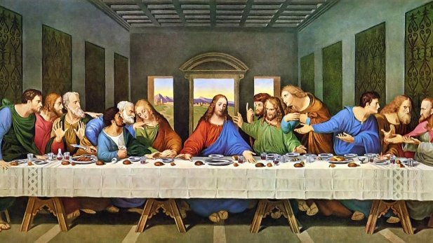
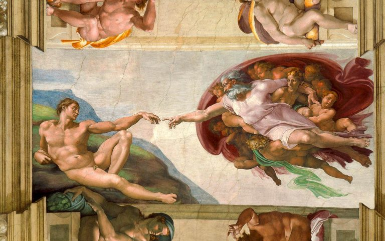

El nacimiento de Venus
Realizado por el pintor florentino Sandro Botticelli durante los años 1482-1485. Se encuentra en la Galería Uffizi.
Ir a la Galería Uffizi

La última cena
Es una pintura mural original de Leonardo da Vinci ejecutada entre 1495 y 1498. Se encuentra en la pared sobre la que se pintó originalmente, en el refectorio del convento dominico de Santa Maria delle Grazie en Milán.
Ir Santa Maria delle Grazie

La creación de Adán
Es un fresco en la bóveda de la Capilla Sixtina, pintado por Miguel Ángel alrededor del año 1511. Se encuentra en la Capilla Sixtina.
Ir a la Capilla Sixtina